返回
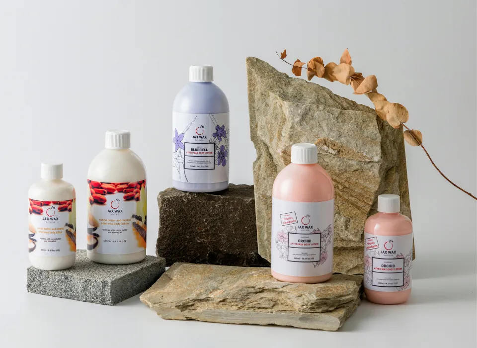
肌膚保養介紹
Jax Wax Austraila除了軟蠟與硬蠟等熱銷商品，也時刻關注您除毛前後的潔膚保養。萃取自澳洲純天然植萃精華製作而成，是由大自然衍伸出的頂級美膚品。為了讓肌膚在除毛後能維持良好的狀態，如何正確的保養非常重要，我們提供給您純天然的頂級潔膚聖品，呵護肌膚從現在做起。
除毛前
除毛前欲將除毛部位清潔乾淨，確保髒汙無殘留，避免肌膚受到交叉感染。您可以選擇潔膚噴霧在除毛前進行清潔。
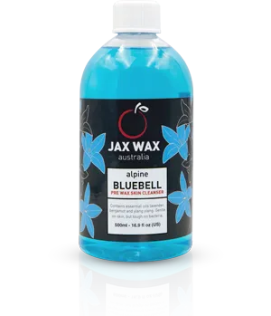
薰香風信子潔膚噴霧
採用薰衣草和佛手柑精油配製而成，具有鎮靜和精緻的香味。在除毛開始前清潔、鎮靜皮膚並去除表面細菌。
除毛後
此時肌膚特別敏感脆弱，須保濕潔膚噴霧鎮靜肌膚，變免膚質乾燥敏感，也可使用保濕精華露、保濕乳液來讓肌膚增加水潤感。若您是弱敏感肌，使用舒緩乳液也是不錯的選擇。
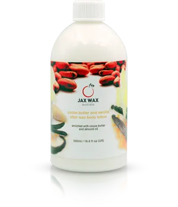
香草椰子舒緩乳液
細緻的香草香味用真正的可可脂製成。明顯減少泛紅，非常推薦在臉部除毛後保養用。
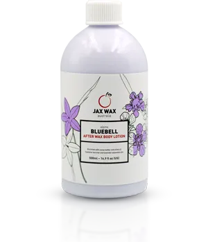
薰香風信子舒緩乳液
同時兼具薰衣草精油、澳洲茶樹精油的功效，是清爽的舒緩乳液。除毛後可立即減少泛紅和發炎。非常適合作為居家護理用品。
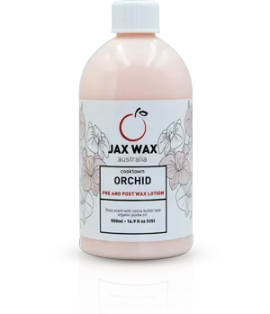
頂級蘭花保濕乳液
含有有機荷荷巴油、純可可脂，適合在除毛後使用，也能作為一般日常保濕乳液使用。
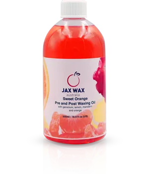
甜橙保濕精華露
天竺葵、檸檬、柑橘和橙子結合橄欖油和杏仁油。快速吸收到皮膚表面，保護敏感或私密區域，減少疼痛。
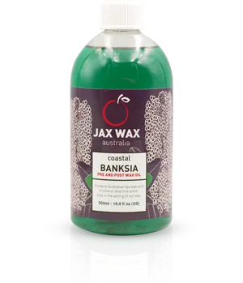
萊姆椰子精華露
澳洲茶樹和萊姆精油，強烈推薦用於私密處、眉毛、臉部除毛及居家護理。
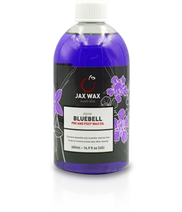
薰香風信子精華露
含有薰衣草和茶樹精油香氣的清爽精華露。 薰衣草精油能迅速被肌膚吸收、發揮補水、鎖水雙重功效。
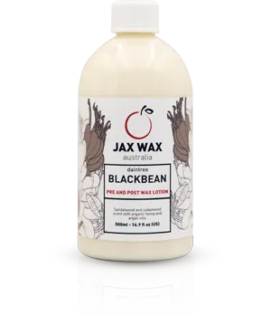
甜橙保濕精華露
天竺葵、檸檬、柑橘和橙子結合橄欖油和杏仁油。快速吸收到皮膚表面，保護敏感或私密區域，減少疼痛。
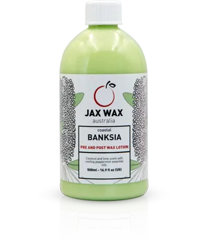
萊姆椰子精華露
澳洲茶樹和萊姆精油，強烈推薦用於私密處、眉毛、臉部除毛及居家護理。
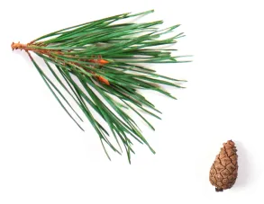
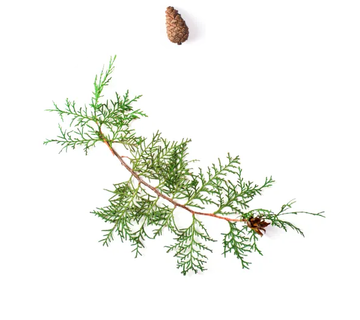
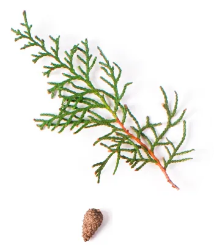
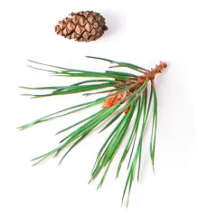